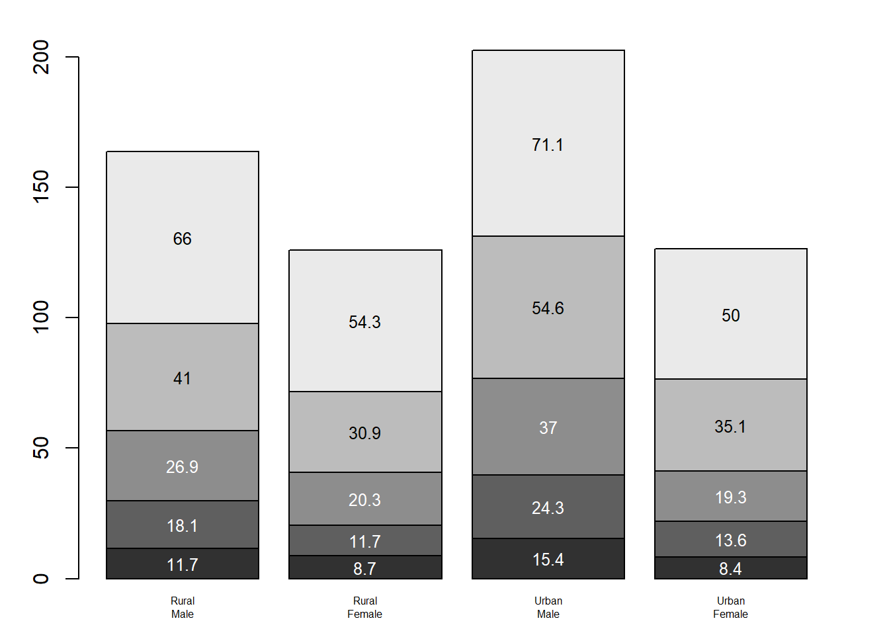
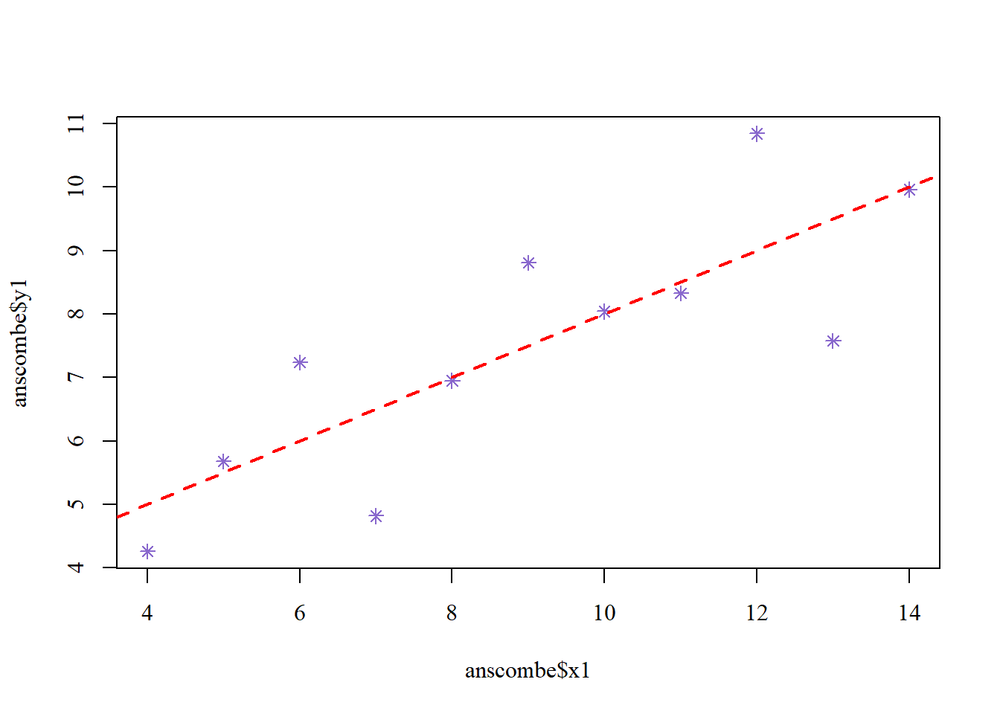

# Barplot# Set the plot margins in the order: bottom, left, top, and right.par(mar=c(2, 3.1, 2, 2.1)) # Create a bar chart using the VADeaths dataset.# gray() defines five different shades of gray.# names=rep("", 4) suppresses the default x-axis labels.# midpts stores the horizontal center positions of the four bars.midpts <-barplot(VADeaths, col=gray(0.1+seq(1, 9, 2)/11), names=rep("", 4))# Add category labels below each bar.# sub() replaces the space in each category name with a line break.# at=midpts positions the labels at the center of each bar.# side=1 places labels below the plot.# line=0.5 controls the distance from the axis.# cex=0.5 reduces the text size.mtext(sub(" ", "\n", colnames(VADeaths)), at=midpts, side=1, line=0.5, cex=0.5)# Add numerical values inside each stacked bar segment.# rep(midpts, each=5) repeats the x-position for five segments.# cumsum() calculates the cumulative height of each segment.# Subtracting VADeaths/2 places each value at the segment's center.# Alternating white and black text improves readability.# cex=0.8 adjusts the text size.text(rep(midpts, each=5), apply(VADeaths, 2, cumsum) - VADeaths/2, VADeaths, col=rep(c("white", "black"), times=3:2), cex=0.8)

# Restore the default plot margins for subsequent charts.par(mar=c(5.1, 4.1, 4.1, 2.1))
Dataset Intercept Slope R_squared Residual_SE
I 3.0001 0.5001 0.6665 1.2366
II 3.0009 0.5000 0.6662 1.2372
III 3.0025 0.4997 0.6663 1.2363
IV 3.0017 0.4999 0.6667 1.2357
The four regression models produced similar results. The intercepts were about 3, and the slopes were 0.50. In addition, the R-squared values were 0.67, and the residual standard errors were 1.24. Based on these statistical results, the four models appear to have similar linear relationships.
However, the scatterplots reveal substantial differences in the distribution of observations. Graph 1 shows a relatively linear relationship, with observations scattered around the regression line. Graph 2 shows a clear nonlinear pattern, suggesting that a linear regression model may not adequately capture the relationship. Graph 3 contains an outlier that deviates significantly from the other observations and may influence the regression estimates. Finally, Graph 4 contains a high-leverage observation, while most observations share the same x-value.
These findings demonstrate that similar summary statistics and regression estimates do not necessarily indicate similar data structures. Although all four models have nearly identical coefficients, R-squared values, and residual standard errors, the visualizations reveal nonlinearity, an outlier, and an influential observation that cannot be identified from these statistics alone. Therefore, data visualization is essential for evaluating regression models and understanding the underlying patterns of the data.
3. Finetune without leaving base R
par(family ="serif") plot(anscombe$x1, anscombe$y1, pch =8, col ="mediumpurple3", cex =1) abline(lm1, col ="red", lty =2, lwd =2)

4. ggplot2
library(ggplot2)
Warning: package 'ggplot2' was built under R version 4.4.3
I reproduced the scatterplot from Part 3 using ggplot2 while maintaining the same visual characteristics, including a serif font, purple plotting characters, and a red dashed regression line. In ggplot2, the base R plotting character (pch = 8) was replaced with shape = 8 in geom_point(). The regression line created by abline() was reproduced using geom_smooth(method = "lm"), with linetype = 2 specifying a dashed line. The serif font was applied using theme_classic(base_family = "serif"). Although ggplot2 provides scale_*() functions for controlling axis scales and aesthetic mappings, these functions were not necessary for the fixed colors and plotting characters used in this visualization. Some base R parameters do not have exact one-to-one equivalents. For example, cex and lwd correspond conceptually to size and linewidth, but their numerical scales differ between the two graphics systems.